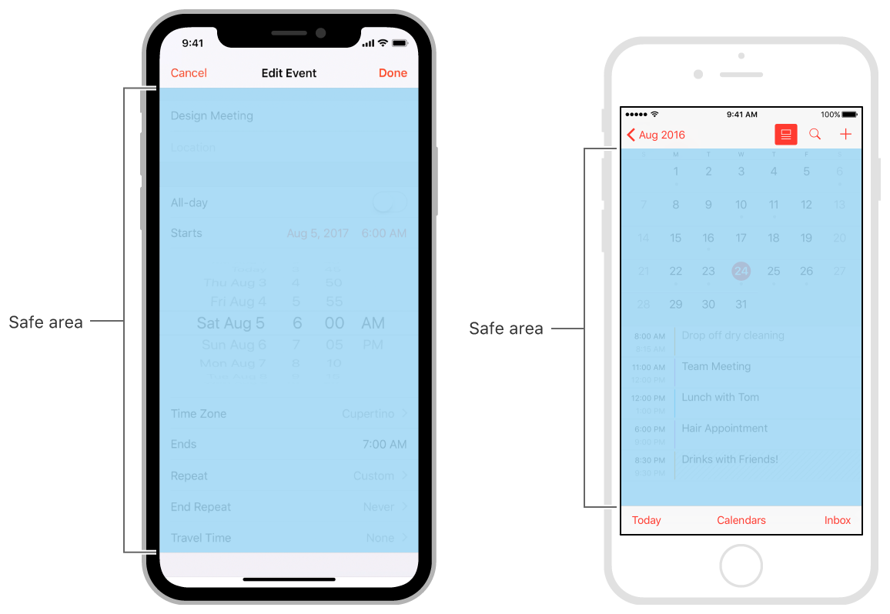
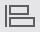
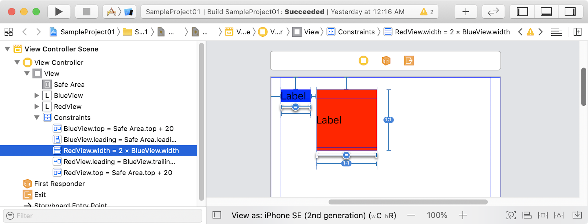

At the conclusion of this lesson, participants will be able to:
- use Auto Layout to build adaptive user interfaces to respond to variations in screen size and orientation
- use Stack Views to build adaptive user interfaces with complex layouts
What you'll need
- Mac running macOS (Mojave or Catalina)
- Xcode 11
Videos for the activities can be obtained from:
Auto Layout
- a development tool for constructing adaptive interfaces
- dynamically calculates the size and position of all views in the view hierarchy based on constraints
In the figure below, the blue I-bars represent constraints. Taking the upper rectangle as an example, the constraints act as rules to tell iOS that there should be a space of 20 on the left, right and top. These rules help to ensure the layout remains consistent across different device sizes. We will learn more about constraints in a later section.
- A
UIViewobject is a container which can contain otherUIViewobjects (note that all user interface objects inherit fromUIView) - All view controllers have a root view object which is accessible via the property
view : UIView! - The root view object contains the user interface objects the view controller will control
- In Interface Builder, the Document Outline shows the view hierarchy which starts with the root view object at the top and then the view objects it contains below
The screenshot below (taken from the document outline) shows a view hierarchy:
- The View Controller has a root view object called View.
- This root view object contains two UIView objects: TopView and BottomView.
- TopView contains two UILabel objects: TopLabel and CenterLabel.

Watch the video Activity01 - Introduction to autolayout and read the instructions below concurrently.
- Create SampleProject01 using the Single View App template. Update the Organization Identifier with your studentid (e.g. sg.edu.rp.18184723)
- Change the simulator to iPhone 8
- Select Main.storyboard
In Main.storyboard:
- Change the View as: to iPhone 8 or iPhone SE (2nd generation)
- From the menu, select Editor, Canvas. Ensure that Layout Rectangles and Bounds Rectangles are checked.
- Add a UILabel to the center of the view; you should see layout guides which indicate the vertical and horizontal centers of the view
- Run the project. Verify the label is in the center when the iPhone 8 is in portrait mode, but is not in the center when in landscape mode.
In Main.storyboard:
- Select the label, check the size inspector. Verify the values for X and Y are 166 and 323 respectively and the values for Width and Height are 42 and 21 respectively.
- Select the label, click on the align tool and check Horizontally in Container and Vertically in Container, click Add 2 constraints.
- View the constraints in the Document Outline.
- Run the project. Verify the label is in the center when the iPhone 8 is in portrait mode and landscape mode.
In Main.storyboard:
- Show the Preview via the Adjust Editor Options button
- In the preview panel, use the add button to add an iPhone 8 device twice to get one in portrait mode and one in landscape mode. Delete any other devices from the preview panel.
In the previous activity, we used the align tool to create 2 constraints (Horizontally in Container and Vertically in Container) for a label. As a result, we saw two constraints in the document outline:
Label.centerX = centerX
Label.centerY = centerY
In this section, we will learn:
- What is an auto layout attribute
- What is a constraint and how is it interpreted
Auto layout attributes
An auto layout attribute is a feature that can be constrained. There are 9 in total:
- Leading (Left)
- Trailing (Right)
- Top
- Bottom
- Center vertically (Center Y)
- Center horizontally (Center X)
- Baseline
- Height
- Width
Other than height and width, which are related to the size, the other attributes are related to position. Top, Center Y, Bottom and Baseline are related to the position along the y-axis, while Leading, Center X and Trailing are related to the position along the x-axis.
Constraints
A constraint is a rule which affects the size or position of a view. The constraint is always represented by an equation.
There are 3 broad categories for constraints:
- a constraint can define a constant value for an attribute; e.g. an item's height or width
- a constraint can define a relationship between two attributes of a single item; e.g. aspect ratio between an item's height and width
- a constraint can define a relationship between attributes of two items; the items can be views or layout guides
There are 3 types of relationships:
- equal
- greater than or equal
- less than or equal
Example
The example below shows two UIView objects (RedView and BlueView) and the constraint that exists between them. This constraint is an example of a relationship between attributes of two items, and in this case the relationship is an equal relationship.
Consider a simpler version of the constraint without the multiplier:
RedView.Leading = BlueView.trailing + 8.0
This constraint partially defines the x-position for the two objects. It can be read as the x-position of the left side of RedView is equal to the x-position of the right side of BlueView + 8.0. This is one way that you can interpret the equation and visualise the result.
Watch the video Activity02 Constraints (Part 1) and read the instructions below concurrently.
- Continue with SampleProject01
In Main.storyboard:
- Delete the existing constraints.
- Add a second label to the right of the first label.
- In the document outline, rename the left label to BlueView and the right label to RedView.
- Set the background color of BlueView to blue and the background color of RedView to red.
- Right-click drag from the BlueView to the RedView and select Horizontal Spacing
- Notice the red circle in the top right corner of the Document Outline. Click on the red circle to see the errors.
- In the document outline
- right-click drag from BlueView to View and select Top Space to Safe Area
- right-click drag from BlueView to View and select Leading Space to Safe Area
- right-click drag from RedView to View and select Top Space to Safe Area
- View the preview panel. Verify the position of the two labels.
- Edit the text in the blue label to This is a longer label. Verify the blue label is longer than before and the left side of the red label still maintains a distance of 8 from the right side of the blue label.
https://developer.apple.com/documentation/uikit/uiview/2891102-safearealayoutguide
https://developer.apple.com/documentation/uikit/uiview/positioning_content_relative_to_the_safe_area
Layout Guides
You might have noticed some blue color lines in the root view object (e.g. on the left and right side), and some dotted blue color lines when you try to position a user interface component. These lines are layout guides which aid with the positioning, alignment, and spacing of content. The system includes predefined layout guides that make it easy to apply standard margins around content and restrict the width of text for optimal readability.
Safe Area
The safe area is a layout guide that indicates where it is "safe" to place the user interface objects.
The screenshot above shows the area defined by the root view (image on the left) and the area defined by the safe area (image on the right). If a user interface object is constrained to the top of the view, it will overlap with the status bar; this overlap will not happen if it is constrained to the top of the safe area.
Applying constraints relative to the safe area prevents display problems when a status bar, navigation bar, toolbar or tab bar is present. The screenshots below show examples of this.

Refer to the documentation at the URL above on how constraints can be created via:
- control-drag between views
- the Pin and Align tools
While the documentation does mention that you can let Interface Builder set up the constraints for you, the resulting layout may not behave the way you want. Further, the skill of identifying the constraints to tweak, and actually tweaking those constraints may not be that straightforward as well.
Update Frames | Updates the frames of the user interface objects based on the constraints | |
 | Align | Create alignment constraints, such as aligning the leading edges of two user interface objects |
Add New Constraints | Create spacing constraints, such as defining the distance between two user interface objects | |
Resolve Auto Layout Issues | For updating, resetting, clearing or adding system generated constraints | |
Embed In | Embed selected view in a view, a view without inset, a scroll view or a stack view |
Update Frames
- Frame of user interface object in canvas does not match the size or position based on the constraints (upper screenshot) which is indicated by the orange I-bars; pressing update frames updates the object in the canvas to match the size or position based on the constraints (lower screenshot)
Align
- All options except Horizontally in Container and Vertically in Container requires two objects to be selected before the Align tool is clicked
Add New Constraints
- The dotted I-bar must be clicked to change it to a solid I-bar
- A solid I-bar indicates a constraint to be added
Resolve Auto Layout Issues
Embed In
Watch the video Activity03 Creating constraints and read the instructions below concurrently.
- Continue with SampleProject01
In Main.storyboard:
- Delete the existing constraints.
- Select BlueLabel, use the add new constraints tool to create top (20), left (16) and right (8).
- Select BlueLabel and RedLabel, use the align tool to align Top Edges.
- Edit the text in the blue label to Yet another successful experiment.
- View the preview panel. Verify the layout.
Selecting a constraint
- From the document outline

- From the storyboard canvas (constraint appears as a blue I-bar)
- From the size inspector (select the item of interest, size inspector shows all constraints affecting that item)
Modifying constraint properties
- Select the constraint
- Use the attributes inspector or size inspector to modify the constraint properties
Multiplier and constant property
In the earlier section, we disregarded the multiplier in the constraint to simplify the explanation. In practice, do consider the effect of the multiplier on the constraint.
The multiplier can be expressed as a whole number, a decimal number or a ratio.
Both the multiplier and constant property can be edited by selecting the constraint and using the attributes inspector or size inspector.
Equal widths constraint
It is important to note that because constraints have a multiplier property, the equal widths constraint does not always result in two items which have the same width.
RedView.width = BlueView.Width
The constraint above will result in RedView having the same width as BlueView.
RedView.width = 2 x BlueView.Width
The constraint above will result in RedView having double the width of BlueView.
Aspect ratio constraint
This is an example of a constraint which defines a relationship between two attributes of a single item; in this case, it is the aspect ratio between an item's width and height.
- The multiplier property can be used to change the ratio
- In the document outline, this constraint is found under the item that is identified in this constraint

Height and Width constraint
These are examples of constraints which define a constant value for an attribute
- In the document outline, this constraint is found under the item that is identified in this constraint
Reverse first and second item
The following two constraints are equivalent:
RedView.width = 2 x BlueView.Width
BlueView.width = 0.5 x RedView.Width
Choose the equation that is easier to understand.
To go from one form to another, use Reverse First and Second Item:
- Select the constraint
- Use the attributes inspector or size inspector
- Select Reverse First and Second Item from either First Item or Second Item

The layout of the view hierarchy is achieved through a set of non-conflicting constraints which resolve to only one possible unambiguous layout. A red circle in the document outline indicates an error which may be easily resolved or require further debugging.
Watch the video Activity04 Constraints (Part 2) and read the instructions below concurrently.
- Continue with SampleProject01
In Main.storyboard:
- Select BlueLabel and RedLabel, use the add new constraints tool to create an Equal Widths constraint.
- Select the equal widths constraint and use the attributes inspector to change the multiplier to 2. From the document outline, verify the constraint is
RedView.width = 2 x BlueView.width - View the preview panel. Verify the length of RedLabel is two times the length of BlueLabel.
- Select the equal widths constraint and use the attributes inspector to select Reverse First and Second Item. From the document outline, verify the constraint is
BlueView.width = 0.5 x RedView.width - View the preview panel. Verify the length of BlueLabel is half the length of RedLabel.
- Select the constraint BlueView.leading = Safe Area.leading + 16. Use the attributes inspector to set the Constant to 40. From the preview panel, verify the labels have shifted to the right. Change the Constant back to 16.
- Select RedLabel, use the add new constraints tool to create an Aspect Ratio constraint.
- From the document outline, select the aspect ratio constraint and set the multiplier to 1:1. From the preview panel, verify RedLabel is now a square.
- Select BlueLabel, use the add new constraints tool to create a Width constraint of 50. Select RedLabel and use the size inspector to verify the width is 100.
- Select RedLabel, use the add new constraints tool to create a Width constraint of 120. Verify an error shows in the document outline.
- Run the project. Verify application runs but there are messages in the debug area.
- Click the red error circle in the document outline.
- Click the red error circle next to the conflicting constraint. Check the box next to the
width = 120constraint and click Delete Constraints.
Watch the video Activity05 Nested UIView.
- Create a project Activity05 to duplicate the project shown in the demo
- Zip up this project as Activity06.zip.
https://developer.apple.com/documentation/uikit/uistackview
Stack views are a powerful tool for quickly and easily designing your user interfaces. Their attributes allow a high degree of control over how they lay out their arranged views.
A stack view manages a collection of user interface objects in a single row or column. A stack view arranges user interface objects based on the following properties:
Axis | defines the stack view's orientation, either horizontal (row) or vertical (column) |
Distribution | defines the layout of the views along the axis |
Alignment | defines the layout of the views perpendicular to the stack view's axis |
Spacing | defines the space between adjacent views |
Horizontal Axis
- Distribution is along the x-axis
- Alignment is along the y-axis
Alignment | Description |
Fill | All items have the same height as the stack view. |
Top | All items are aligned to the top of the stack view and retain their default height. |
Center | All items are aligned to the center of the stack view and retain their default height. |
Bottom | All items are aligned to the bottom of the stack view and retain their default height. |
Vertical Axis
- Distribution is along the y-axis
- Alignment is along the x-axis
Alignment | Description |
Fill | All items have the same width as the stack view. |
Leading | All items are aligned to the left of the stack view and retain their default width. |
Center | All items are aligned to the center of the stack view and retain their default width. |
Trailing | All items are aligned to the right of the stack view and retain their default width. |
Distribution
Distribution | Description |
Fill | Makes one subview take up most of the space, while the others remain at their natural size. It decides which view to stretch by examining the content hugging priority for each of the subviews |
Fill Equally | Adjusts each subview so that it takes up equal amount of space in the stack view. All space will be used up |
Fill Proportionally | Ensures subviews remain the same size relative to each other, but still stretches them to fit the available space. For example, if one view is 100 across and another is 200, and the stack view decides to stretch them to take up more space, the first view might stretch to 150 and the other to 300 – both going up by 50% |
Equal Spacing | Adjusts the spacing between subviews without resizing the subviews themselves |
Equal Centering | Attempts to ensure the centers of each subview are equally spaced, irrespective of how far the edge of each subview is positioned |
Constraints
Although a stack view allows you to layout its contents without using Auto Layout directly, you still need to use Auto Layout to position the stack view itself. In general, this means pinning at least two, adjacent edges of the stack view to define its position. Without additional constraints, the system calculates the size of the stack view based on its contents. You can provide additional constraints to specify the stack view's height, width, or both. In these cases, the stack view adjusts the layout and size of its arranged views to fill the specified area.
Nested Stack Views
By nesting stack views, complex layouts can be easily achieved. The nested stack views activity will demonstrate this.
Watch the video Activity06 Stack view.
- Create a project Activity06 to duplicate the project shown in the demo
- Note that the stack view must be constrained to the root view
- Zip up this project as Activity06.zip.
Watch the video Activity07 Nested stack views.
- Create a project Activity07 to duplicate the project shown in the demo
- Note that the URL for the tutorial shown in the demo is given above
- Zip up this project as Activity07.zip.
Create project Exercise01 with the user interface shown and all necessary constraints created. Note the following:
- For this exercise, stack views are not allowed.
- All colored views have equal width
- No spacing between the views
- For the views on the left, the view at the top takes up 25% of the height, and the view at the bottom takes up 75% of the height
- For the views on the right, the view at the top takes up 75% of the height, and the view at the bottom takes up 25% of the height
- Where insufficient information has been provided to you, make a best guess based on the screenshot shown and by following the system predefined layout guides and safe area.
- Where possible, avoid creating width and height constraints.
Create project Exercise02 with the user interface shown and all necessary constraints created. Note the following:
- For this exercise, stack views are not allowed.
- The grey UIView object has a width of 128 and an aspect ratio of 1:1
- LabelD always has the same width as the grey UIView object
- LabelC always has twice the width of LabelD
- The grey UIView object, LabelC and LabelD are all centrally aligned
- LabelA and LabelB always have the same width
- Where insufficient information has been provided to you, make a best guess based on the screenshot shown and by following the system predefined layout guides and safe area.
- Where possible, avoid creating width and height constraints.
Create project Exercise03 with the user interface shown and all necessary constraints created. Note the following:
- For this exercise, you must use nested stack views.
- The root view object can only directly contain one root stack view.
- The grey UIView object has a width of 128 and an aspect ratio of 1:1
- LabelD always has the same width as the grey UIView object
- LabelC always has twice the width of LabelD
- The grey UIView object, LabelC and LabelD are all centrally aligned
- LabelA and LabelB always have the same width
- Where insufficient information has been provided to you, make a best guess based on the screenshot shown and by following the system predefined layout guides and safe area.
- Where possible, avoid creating width and height constraints.
Create project Exercise04 with the user interface shown and all necessary constraints created. Note the following:
- For this exercise you are free to use any approach.
- The application icons are provided in icons.zip in your student package.
- Each application icon is displayed in an image view.
- For the label which displays Android Studio, use the attributes inspector to set Lines to 2.
- The bottom most item is a Go button with a red background and white text.
- The devices in the screenshot are iPhone SE, iPhone 8 Plus, iPhone 11 Pro and iPhone 11 Pro Max.
- Where insufficient information has been provided to you, make a best guess based on the screenshot shown and by following the system predefined layout guides and safe area.
- Where possible, avoid creating width and height constraints.
- Adaptable Interfaces - Size classes
Reference docs
- https://developer.apple.com/design/human-interface-guidelines/ios/visual-design/adaptivity-and-layout/
- https://developer.apple.com/library/archive/documentation/UserExperience/Conceptual/AutolayoutPG/index.html
- https://developer.apple.com/library/archive/documentation/ToolsLanguages/Conceptual/Xcode_Overview/PreviewingYourUserInterface.html
- https://developer.apple.com/library/archive/documentation/UserExperience/Conceptual/AutolayoutPG/AnatomyofaConstraint.html
- https://developer.apple.com/design/human-interface-guidelines/ios/visual-design/adaptivity-and-layout/
- https://developer.apple.com/documentation/uikit/uiview/2891102-safearealayoutguide
- https://developer.apple.com/documentation/uikit/uiview/positioning_content_relative_to_the_safe_area
- https://developer.apple.com/library/archive/documentation/UserExperience/Conceptual/AutolayoutPG/WorkingwithConstraintsinInterfaceBuidler.html
- https://developer.apple.com/library/archive/documentation/UserExperience/Conceptual/AutolayoutPG/TypesofErrors.html
- https://developer.apple.com/library/archive/documentation/UserExperience/Conceptual/AutolayoutPG/DebuggingTricksandTips.html
- https://developer.apple.com/library/archive/documentation/UserExperience/Conceptual/AutolayoutPG/LayoutUsingStackViews.html
- https://developer.apple.com/documentation/uikit/uistackview
- https://developer.apple.com/library/archive/documentation/UserExperience/Conceptual/AutolayoutPG/LayoutUsingStackViews.html